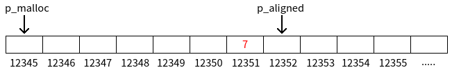

昨天写的博客《使用Intel SSE/AVX指令集（SIMD）加速向量内积计算》中提到SSE指令集处理的数据地址需要16字节对齐，而AVX指令集处理的数据地址需要32字节对齐。对于静态分配，可以通过__attribute__((aligned(16)))和__attribute__((aligned(32)))来指定，但是动态内存分配没法指定对齐（C11规范中POSIX平台上出现了aligned_malloc()函数，但是使用上还是有些限制）。
一个很自然的想法就是——首先利用malloc()库函数申请一段“足够大”的内存，得到一个指针。然后看看指针的地址，算一下要跳过几个字节才能满足指定的对齐。比如我要的地址是16字节对齐的，结果malloc()返回的指针p指向的地址是12345（十进制），掐指一算，下一个能够被16整除的数是12352，那么就需要把p+7返回给用户。那么问题来了，怎么释放内存呢？
如果了解过malloc()和free()的实现，就知道，要在返回的地址前面加入一个信息。在我这里，我选择加入一个“偏移量”信息，比如上文的7。OK，来看一下可视化的描述：

p_malloc是malloc()返回的指针。我们往后跳过7个字节，用一个指针p_aligend指向p_malloc+7，并且在p_malloc+6的位置的那个字节存入数字7，然后把p_aligned返回给用户。
当用户需要释放指针时，传给我们的是上文返回的p_aligned。我们只要去读取p_aligned[-1]的值，读到7。那么就得知当时malloc()返回的地址就是p_aligned-7，把p_aligned-7传给free()就行了～
那么来把代码确定一下：
#include <stdint.h>
#include <stdlib.h>
#define PTR_ADDR(p) ((unsigned long)p)
void* malloc_aligned(uint32_t size,uint8_t alignment)
{
assert(alignment>0);
uint8_t* bytes=(uint8_t*)malloc(size+alignment);
uint8_t offset=alignment-PTR_ADDR(bytes)%alignment;
bytes+=offset;
bytes[-1]=offset;
return bytes;
}
void free_aligned(void* ptr)
{
assert(ptr!=0);
uint8_t* bytes=(uint8_t*)ptr;
uint8_t offset=bytes[-1];
bytes-=offset;
free(bytes);
}
那么malloc()的参数为啥是size+alignment呢？这是因为，offset的取值必定在[1,alignment]中，而返回给用户的可用空间需要size字节，那么申请size+alignment字节则可以保证够用。